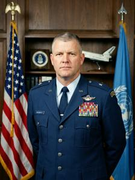

Caleb Dougherty


Caleb Lafayette Dougherty (b. 1964) is the commander of the FUPFOR peacekeeping force in Former Upper Pannonia, a U.S. Air Force brigadier general, and a former astronaut.
Dougherty was born in 1964 in Tulsa, Oklahoma, to a petroleum engineer. After graduating from the U.S. Air Force Academy in Colorado Springs in 1986, he went into fighters, logging more than 3,000 hours in the F-16 and flying 38 combat sorties in Operation Desert Storm. He graduated from the Air Force Test Pilot School at Edwards in 1995. Space had been his dream since childhood, and it seemed within reach when in 1997, after several persistent applications, he was selected for the NASA Astronaut Corps. He was named to several Space Shuttle backup crews and later to prime crews, only to be pulled each time at the last minute through one absurd mishap or another. This happened four times. One of the missions he missed was the doomed 2003 flight of Columbia: the hot-tempered Dougherty lost his seat after a bar fight with a Moon-landing denier. When the Space Shuttle program ended in 2011, his group was disbanded.
He spent the next few years in minor Air Force staff posts. His unfulfilled dream of space turned into an unhealthy fascination with UFOs and other anomalous phenomena. During this period he made a name for himself with sensational public claims about alien contacts he supposedly knew of, which the tabloids and social media eagerly spread under headlines such as "Former Astronaut and Senior Air Force Officer Confirms Aliens Exist." Tired of issuing denials, his superiors packed him off to Europe in 2013, to a think tank attached to NATO command. There he again courted too much media attention and developed an interest in the anomalous phenomena of Former Upper Pannonia, especially the Tepelje Oval. This interest gave Brussels a convenient excuse to send him even farther away. In 2016 he was promoted to brigadier general and given command of FUPFOR — in effect, an honorable retirement.
The peacekeeping mission had not been involved in any conflict for years, and its work came down to routine patrols and guard duty. General Dougherty livened things up at once. He set up a research center at his headquarters, PAPER (Pannonian Peacekeeper Research), unofficially known as "FUPFOR's Men in Black," and its first act was an expedition to the Tepelje Oval. This was a flagrant breach of the Lausanne Agreements, and Dougherty did not even notify the authorities of the Zgurian Republic, on whose territory the Oval lies; the Zgurian government's protests were ignored. Whether the expedition fared any better than its predecessors is unknown, since Dougherty classified all of its findings. An even bigger scandal followed in 2017, when armed PAPER personnel visited the former archive of NON, socialist Upper Pannonia's state security service, which has been under UNOMFUP's Administrative Affairs Department since 1995. Again ignoring all formalities, PAPER seized still-classified documents from the files of Boris Gowbka and Endre Szamenicki, said to contain information on anomalous phenomena. It returned them only many months later, after repeated protests and complaints from UNOMFUP that went as far as the UN Security Council.
Categories: Military commanders, People